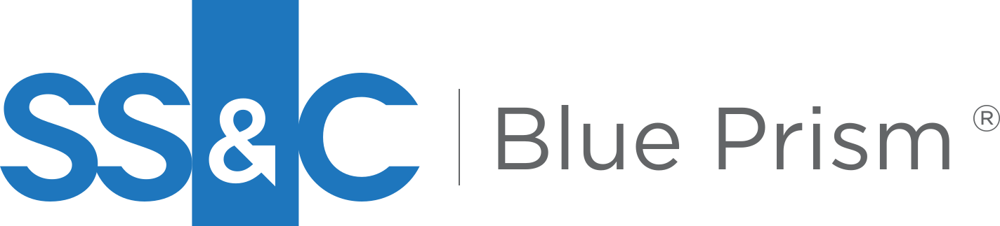

SS&C AI Gateway
Marco de gobernanza de IA de nivel empresarial: control de acceso basado en roles (RBAC), protecciones para una IA responsable, alertas de riesgo y transparencia lista para auditorías.
Automatización, agentes de IA y personas en un único flujo de trabajo regulado, con la gobernanza de la IA integrada desde el diseño.

WorkHQ es el centro de comando seguro donde trabajadores digitales, agentes de IA y personas se coordinan en un único flujo de trabajo regulado, con total visibilidad y control.
WorkHQ incorpora el control por diseño: la IA trabaja dentro de un flujo regulado, con seguridad, auditabilidad y cumplimiento normativo como pilares fundamentales, pensado para banca, salud, seguros y otras industrias reguladas. Así tu empresa decide cómo se usa, se monitorea y se gobierna la IA.
Ganador Silver · Stevie® Awards 2026 · Nuevo producto del año en Inteligencia Artificial.
Marco de gobernanza de IA de nivel empresarial: control de acceso basado en roles (RBAC), protecciones para una IA responsable, alertas de riesgo y transparencia lista para auditorías.
Aprobaciones, escalamientos y entradas manuales con formularios sin código y una bandeja de tareas, para mantener a las personas al mando donde más importa.
Agentes de IA orientados a objetivos, con pruebas integradas y conexión a través de SS&C AI Gateway, que operan dentro del flujo de trabajo y no por fuera de él.
Repositorio de procesos con control de versiones e implementación por etapas, y trazabilidad total de cada flujo para el cumplimiento normativo.
Sin saltar entre herramientas ni sistemas desconectados: una plataforma para coordinar personas, automatización e IA de punta a punta.
Innova con confianza: gobernanza, seguridad y cumplimiento van dentro de cada flujo, incluso en las industrias más reguladas.
Agentes listos para la empresa que razonan, actúan y colaboran con las personas para trabajar más rápido y de forma más consistente.
Diseña una vez y escala entre equipos, procesos y sistemas sin aumentar la carga operativa.
Evoluciona sin reemplazar lo que ya funciona: conserva los trabajadores digitales para procesos con reglas y suma agentes de IA con control.
Los equipos mixtos, donde personas y agentes de IA colaboran, se están volviendo la norma.
Hoy: los procesos fragmentados frenan la transformación y quitan visibilidad.
Hoy: las iniciativas de automatización están desconectadas y se reutilizan poco.
Hoy: los flujos complejos exigen especialistas para construirlos y mantenerlos.
Hoy: las herramientas de IA no tienen coordinación, gobernanza ni control empresarial.
Entorno visual para diseñar, probar y publicar automatizaciones sin fricción.
Suma inteligencia artificial al flujo de trabajo para decisiones más rápidas y precisas.
Cada automatización queda registrada y es auditable, con control normativo integrado.
Se integra con tus sistemas actuales sin necesidad de reemplazarlos.
Cuando tareas repetitivas de backoffice, finanzas u operaciones consumen horas de tu equipo y necesitas automatizarlas con control total.
Cuando un proceso combina tareas automáticas con decisiones que aún requieren una persona.
Cuando quieres llevar tu automatización tradicional a un modelo con agentes de IA y gobernanza.
Cuando quieres adoptar IA en un entorno regulado y necesitas control de accesos, alertas de riesgo y auditoría.
Cifras publicadas por SS&C Blue Prism, según un estudio Forrester Total Economic Impact™ (2024).
Es el plano de control de la automatización agéntica: un solo lugar para diseñar, orquestar y gestionar el trabajo automatizado entre agentes de IA, trabajadores digitales, APIs y personas, en un entorno gobernado, con visibilidad y control totales. Está probado en las operaciones globales de SS&C y listo para escalar la automatización y la IA de forma segura.
Además de bots, orquesta agentes de IA y tareas que aún requieren una persona, todo con gobernanza y auditabilidad integradas en el mismo flujo.
Con SS&C AI Gateway, su marco de gobernanza de IA: define por roles qué puede hacer cada agente, aplica protecciones para una IA responsable, emite alertas de riesgo y deja todo listo para auditoría. Además, las aprobaciones humanas se integran al mismo flujo.
Es el entorno visual donde se diseñan, prueban y publican las automatizaciones, sin necesidad de partir desde cero cada vez.
Sí, mediante conectores diseñados para integrarse con los sistemas y aplicaciones que tu empresa ya utiliza.